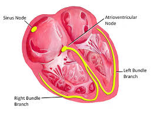

Atrioventricular (AV) Node

What is the Atrioventricular Node?
The Atrioventricular (AV) Node is a critical part of the heart's electrical conduction system. It plays an essential role in maintaining a steady heartbeat by regulating the signal that controls the heart’s rhythm.
Location of the AV Node
The AV node is located in the lower part of the right atrium, near the septum (the wall separating the right and left sides of the heart), just above the tricuspid valve.

Functions of the AV Node
-
Signal Delay:
The AV node delays the electrical signal that comes from the Sinoatrial (SA) node. This delay allows the atria to fully contract and empty their blood into the ventricles before the ventricles contract.
-
Passage of Signal:
After the delay, the AV node passes the electrical signal to the Bundle of His, which then carries it to the ventricles.
-
Backup Pacemaker:
If the SA node fails to work properly, the AV node can act as a backup pacemaker, although it beats slower than the SA node.
Importance of AV Node in Heart Rhythm
Without the AV node, the electrical impulse would travel too quickly from the atria to the ventricles, leading to uncoordinated contractions. The AV node ensures the heart beats in a proper, coordinated manner.
Key Points:
- Acts as a gatekeeper between atria and ventricles.
- Delays signal to allow proper blood flow.
- Can act as a secondary pacemaker.
The AV node is essential for healthy heart function. Disorders or damage to the AV node can result in arrhythmias (irregular heartbeats) or heart block that may require medical attention.